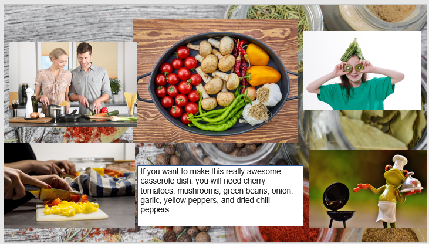

What You Should Know - Google Slides: Step-by-Step
 Important Vocabulary
Important Vocabulary
- Visual Presentation – a visual presentation uses images and other things like diagrams, graphs, or props to share information
- Verb – a verb is a word that describes an action or a state of being (examples of action words verbs are running, sleeping, or snowing)
- Imperative Verb – imperative verbs give orders or instructions. They tell you what to do
- Technical Term – a technical term is a word that has a specific meaning in a particular area of study
- Proofread – read something carefully and correct any mistakes
- Consistent – to make something consistent means that there is not a lot of difference and that things go well together (example: consistent instructions may use lots of short steps like 1. Wash hands. 2. Sit. 3. Eat. 4. Clean up.)
- Public Speaking – when a person speaks to a group of people including teaching, oral presentations, and TV interviews
How to Write Clear Steps for a Task
Here are some tips on how to write clear steps for a task:
Use Imperative Verbs
Imperative verbs are verbs that give orders or instructions. They are often used in lists of steps, such as recipes or instructions for how to build something. Some examples of imperative verbs include:
- "Preheat the oven to 350 degrees Fahrenheit."
- "Add flour, sugar, and eggs to a bowl and whisk until well combined."
- "Bake the cake for 30 minutes."
Use Simple Language
When writing steps, it is important to use simple language that is easy to understand. Avoid using words or technical terms that your audience may not know.
Number the Steps
Numbering the steps will make it easier for your audience to follow the instructions. You can use either Arabic numerals (1, 2, 3) or Roman numerals (I, II, III).

Use Visuals
Pictures, diagrams or other visuals can be helpful in explaining steps. For example, you could use a diagram to show how to put together a piece of furniture, or photos to show what the peanut butter and jelly sandwich should look like after each step.

Order Steps
The steps should be in the correct order so that your audience can follow them correctly. If the steps are not in the correct order, it will be difficult for your audience to complete the task.
Test the Steps
Once you have written the steps, it is important to test them to make sure they are clear and easy to follow. Ask a classmate to follow the steps and see if they have any questions.
Be Consistent
When writing steps, it is important to be consistent in the use of language, format, and style. This will make it easier for your audience to follow the instructions.
For example, consistent instructions may use lots of short steps addressed to you, the reader. For example,
- Wash hands.
- Sit.
- Eat.
- Clean up.
Inconsistent instructions may have different ways of explaining things with some long instructions and some short. For example,
- Don’t forget to wash your hands before you eat. (This is a reminder addressed to you.)
- Sit. (This is a one-word command addressed to you.)
- Eat. (This is another one-word command addressed to you.)
- All students clean up after they finish eating. (This describes what students do. They aren’t instructions and they aren’t addressed to you.)
Proofread the Steps
Once you have written the steps, it is important to proofread them to make sure there are no grammar or spelling mistakes.
Tips for Good Visual Presentations
A good visual presentation helps the audience understand something new and does it in a way that meets the audience’s needs or interests. Here are some tips to make your presentation successful:
- Think about your audience - Who is your audience? What would keep their attention? How do they like to learn?
- Use language that is clear and to the point.
- Use font that is 24pt or larger so that it is easier to read.
- Use short sentences or phrases.
- Include helpful images, but too many pictures and words can be distracting.
- Keep the design consistent from one slide to the next. Images should have similar placement and shapes. Text should also be similar in fonts, colors, and placement. Text and images should line up when possible. Use slide designs and layouts to help with this.


Tips for Public Speaking
Public speaking is a skill that can be learned and improved with practice. Here are some tips for public speaking.
- Practice. The more you practice, the more comfortable you will be.
- Think about your audience - Who is your audience? What would keep their attention? How do they like to learn?
- Make eye contact. This will help you to connect with your audience and make them feel like you are speaking directly to them.
- Be enthusiastic. Energy can be exciting and keep your audience interested.
- Use gestures and facial expressions. This adds emphasis to your speech and will make it more interesting.
- Speak clearly and slowly. This will help your audience to understand you.
- Use humor. Humor can be a great way to connect with your audience and make your speech more memorable. Make sure it is appropriate and relates to your topic.
Former US President Barack Obama is an experienced public speaker. Look at this photo of him giving a speech when he was president. Notice how he is looking directly at his audience and is using his facial expression and hand gestures to communicate.
Career Connection and Real-World Application
Google Slides for Training
Google Slides is often used by supervisors and other trainers to teach employees how to do a job. Trainers may share the information as an oral presentation and refer to Google Slides to highlight key points and show helpful illustrations.
They may also use Google Slides to create training materials that can be reviewed at the employee’s own pace. These are often called training modules and may include step-by-step instructions, videos, and quizzes.